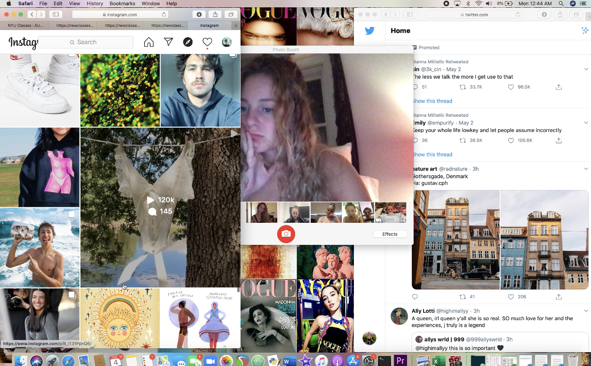

Positive and Negative effects of my Virtual World
Hello! On this page, you will be able to find
my thoughts on the negative and psoitive impact that social media has had on my
life. You can use this as a page for advice on how to go about creating your own idenity
on the internet, or to just take a look in my mind and see a display of some of my art!
Click the image below to watch the video...

This is a short film I made about the role social media plays in someones day to day life. In this film, this charecter is on her phone right when she wakes up. She stuggles to meet the standards in the media
so she decides to throw out her makeup and embrace her natural beauty.